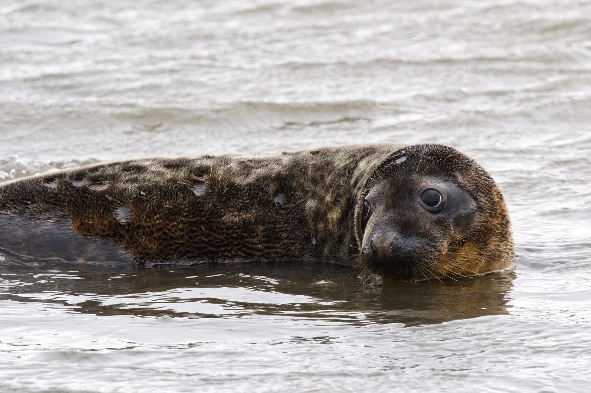

Rescue. Rehabilitate. Release.
Every seal
has a story.
From the first feed to the first swim back at sea. Meet our patients and the seals who have already found their way home.

Currently at the hospital
Small steps. Stronger seals.
Get to know the patients in our care, their rescue stories and the milestones along the way.
Help provide food and care for their next step.
Support our patients →Seal stories
The moments that stay with us
A favourite shower, a feisty personality, a familiar face on the shore. There’s more to every seal than their time in a pen.
Back where they belong
Life beyond the hospital
Release days and returning visitors: explore the next chapter for seals who have completed their care.
Help write the next success story
More fish. More care.
More journeys home.
Your support helps the team care for seals on their way back to the wild.
Found a seal?
Give them space.
Get expert advice.
Keep people and dogs away. Seals rest on land and do not always need rescuing.